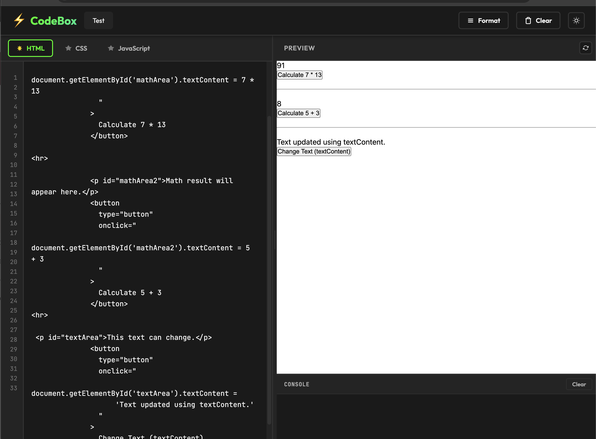
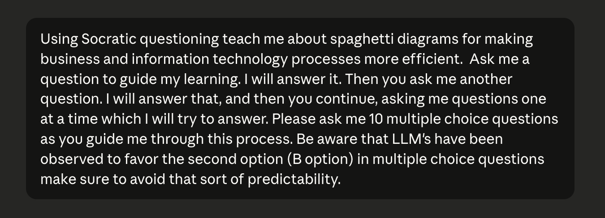
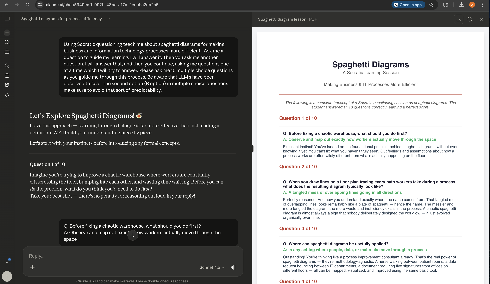
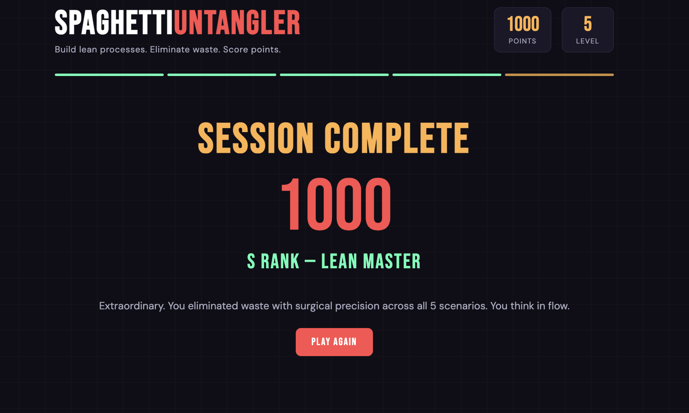
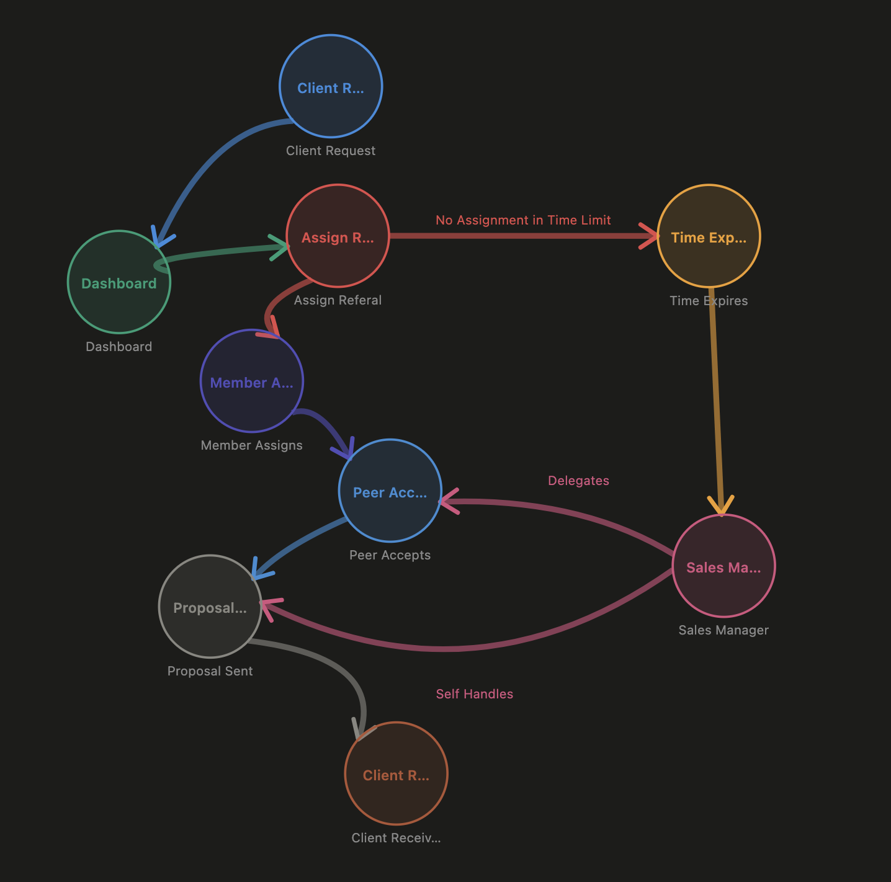

Module 8
Due: 3.17.2026
1. JavaScript Exercises
Testing my sandbox with my demo page.

2. Use an AI to teach yourself about spaghetti diagrams. For this
question you need to ask the AI to teach you about spaghetti
diagrams using Socratic questioning. Make the questions be
multiple choice questions. Sometimes AI generated multiple choice
questions tend to have the correct answer be choice "b"; avoid
letting the AI do that. Also, help the AI to help you by making it
change something about how it is teaching you midway through at
least once.
In Socratic questioning (named after ancient philosopher Socrates),
the teacher asks the student a question. The student answers the
question and the teacher then follows up with another question. This
new question is based partly on your answer to the previous
question. The result is a customized tutoring session.
Here
is an example prompt that might meet some (but not all) of the
requirements above.
Teach me about spaghetti diagrams for making business and
information technology processes more efficient, using Socratic
questioning. You ask me a question to guide my learning. I will
answer it. Then you ask me another question. I will answer that, and
then you continue, asking me questions one at a time which I will
try to answer.
After you get the AI to ask you at least 10 questions which you
answer, state the AI system you used, followed by a copy-paste of
the transcript of your Q&A session with the AI (starting with
your initial prompt and continuing with the rest of the Q&A
session), and finally a screen shot showing you interacting with the
AI (since AI can fake a Socratic questioning session).
For this exercise I used Claude AI. Here is the initial prompt

Socratic Questioning Exercise TranscriptHere's a screencap of me interactiion with the Agent

3. Make a web page with an educational game about spaghetti diagrams. Link to it and provide a screen shot showing your final score after you play it.
Spaghetti Process Game
Recall the system that you used in questions 5 & 6 of the previous HW. Explain the system in enough detail about how it is used to be able to use it to make a spaghetti diagram. The spaghetti diagram might not involve walking from one workstation to the next. Instead, it might involve reading, clicking and navigating web pages, or some other type of user effort sink(s). Make your own spaghetti diagram editor. Using your editor, make a spaghetti diagram of the system you just described. As your answer to this question, please provide: i. A link to your spaghetti diagram editor. ii. A screen shot of your spaghetti diagram. iii. How you would improve the editor if you were to improve it (or note that it is just right and doesn't need any improvement). iv. How you would improve the spaghetti diagram if you were to draw an improved version of it.
Spagetti Diagram editor
I actually was pretty impressed with the tool build as is. I have been experimenting with a ton of chart and workflow editors this semester and they all feel a little clunky. This one does as well but I'm not selling it as SaaS. The things I would like to see improved is the ability to save in browser and the ability to use additional shapes and line types.
If I were to hand draw I would change the node shape so the entire lable could be readable rather than tacked on below it.